Personagens

Mario
O herói corajoso do Reino dos Cogumelos, criação de Shigeru Miyamoto.

Luigi
Irmão de Mario, conhecido por pular mais alto e ter personalidade própria.

Peach
Princesa do Reino dos Cogumelos, frequentemente resgatada por Mario.

Bowser
Rei dos Koopas, principal antagonista da série.
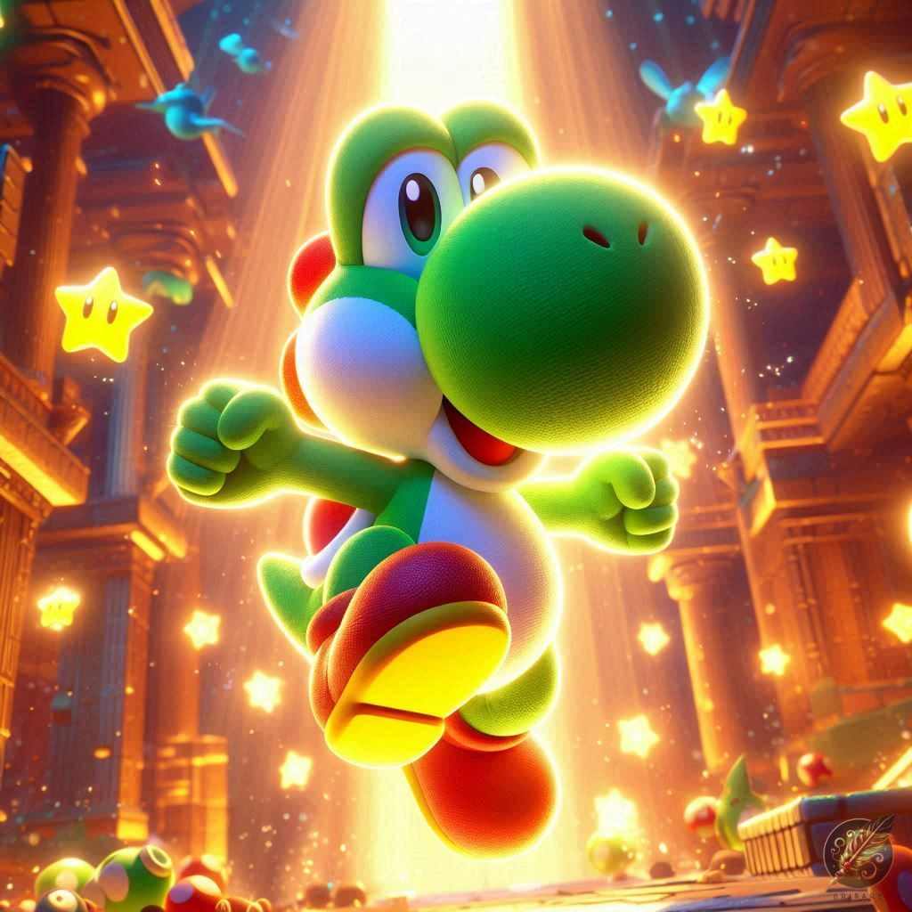
Yoshi
Dinossauro amigo de Mario, com habilidades únicas como ovo disparado.
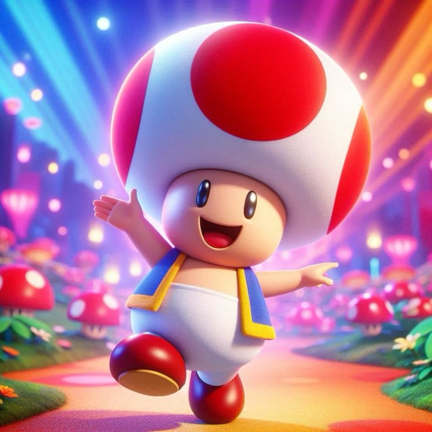
Toad
Habitante do Reino dos Cogumelos e fiel ajudante da princesa.
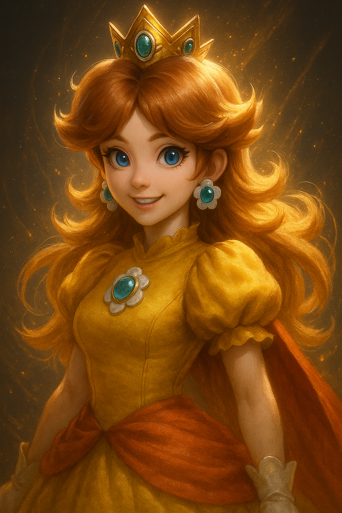
Daisy
Princesa de Sarasaland, amiga de Peach e participante em spin‑offs.
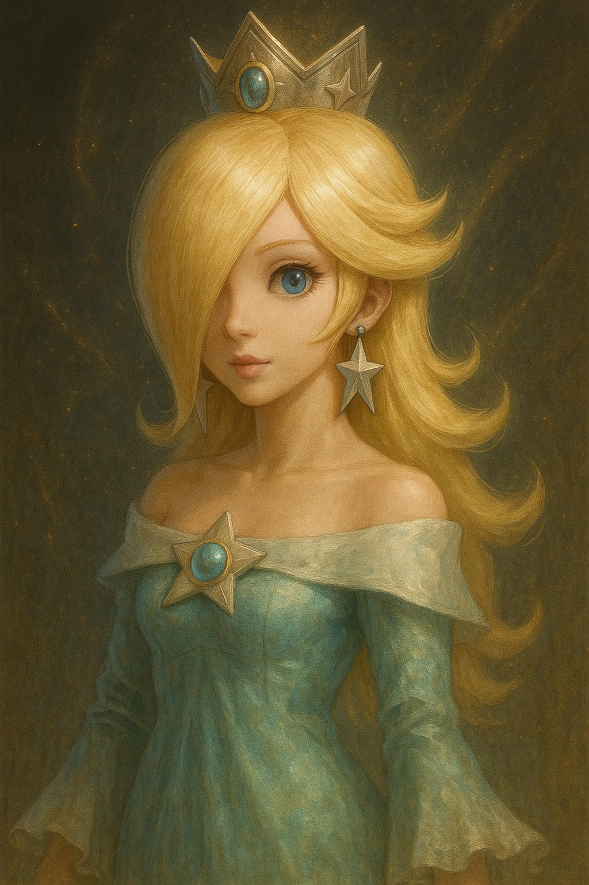
Rosalina
Princesa do espaço, protetora dos Lumas desde Super Mario Galaxy.
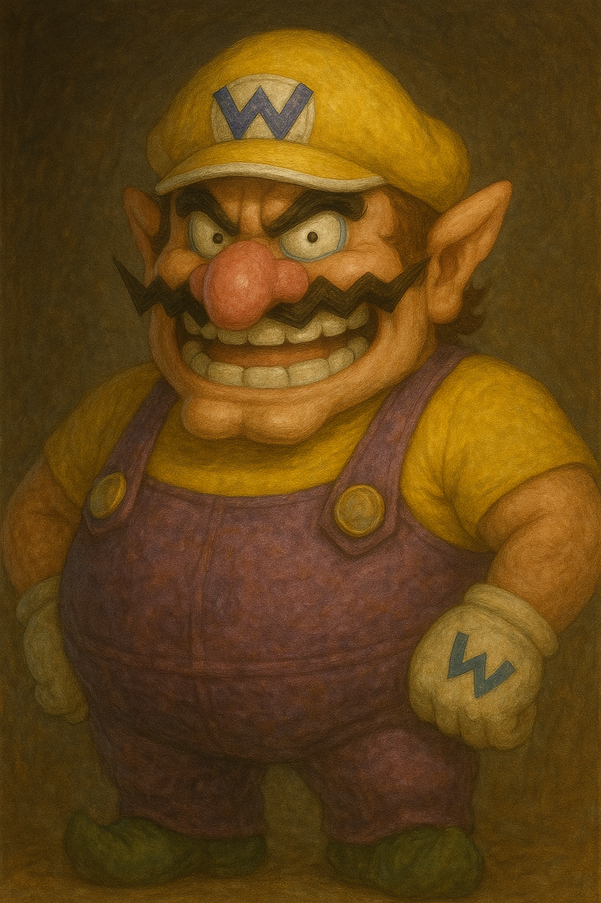
Wario
Anti‑herói ambicioso, rival de Mario em muitas séries.
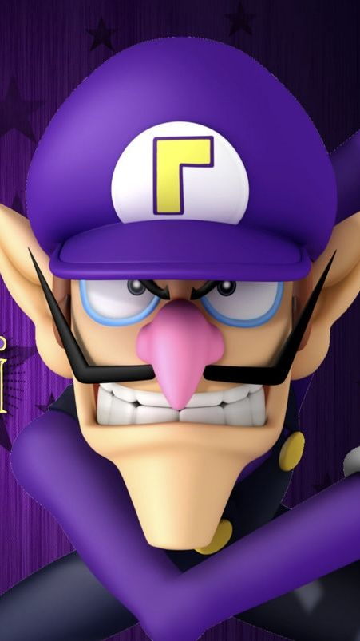
Waluigi
Parceiro de Wario em competições esportivas.
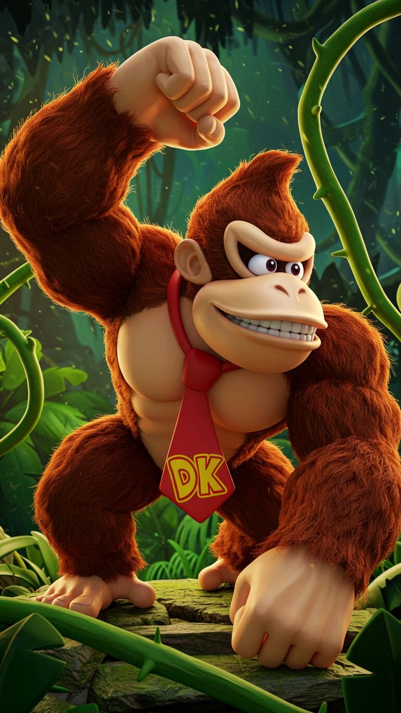
Donkey Kong
Gorila poderoso que já foi vilão, agora aliado em várias aventuras.
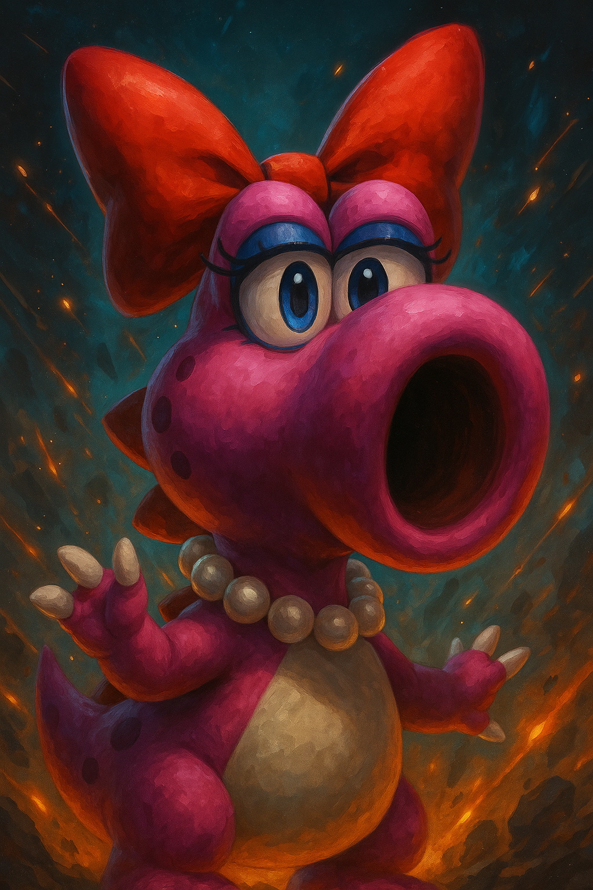
Birdo
Personagem que apareceu pela primeira vez em SMB2 e participou de muitos spin‑offs.
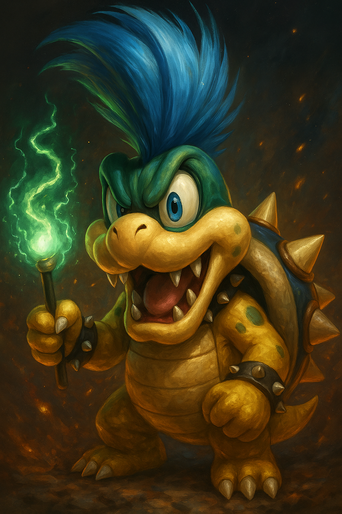
Koopalings
Os sete filhos de Bowser e Bowser Jr., vilões recorrentes desde SMB3.
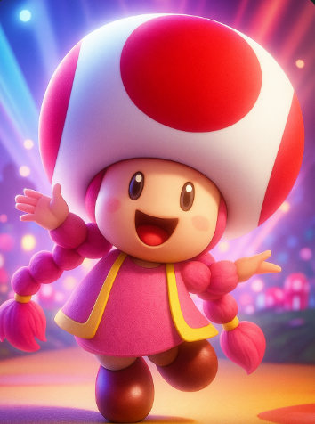
Toadette
Versão feminina do Toad, aparece em diversos jogos como Mario Kart e Captain Toad.
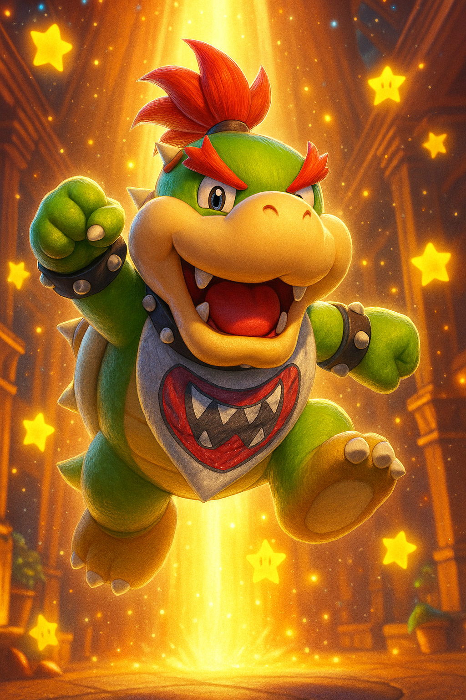
Bowser Jr.
Filho de Bowser, introduzido em Super Mario Sunshine. Sempre tentando derrotar Mario.
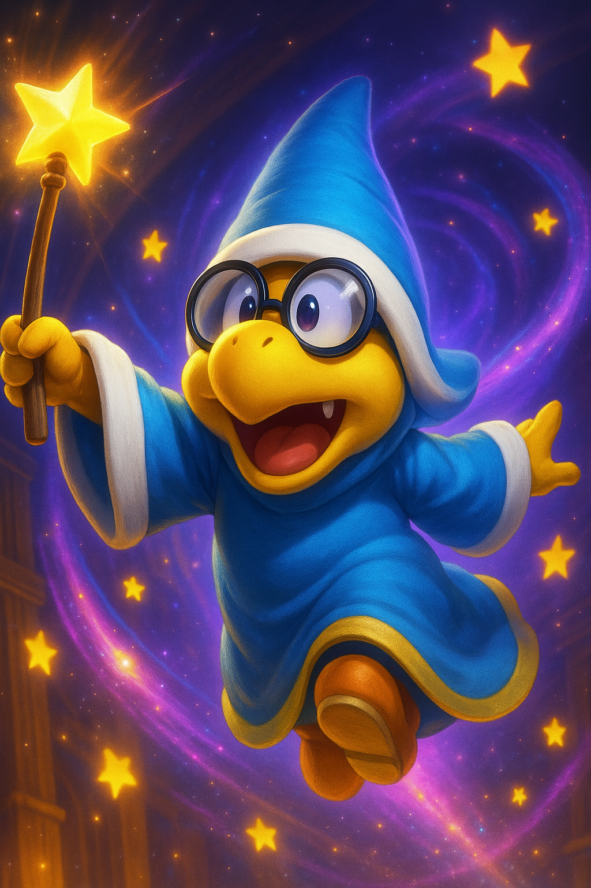
Kamek
Um poderoso magikoopa que serve a Bowser, aparece em diversos jogos como vilão mágico.